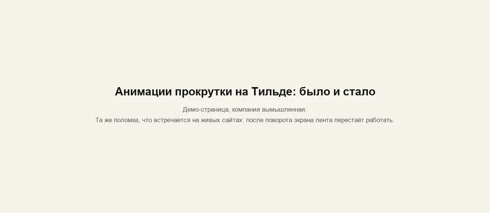

Анимации прокрутки на Тильде: было и стало
Две копии одной демо-страницы (компания вымышленная). Откройте обе на телефоне или планшете, пролистайте до ленты «Наши работы», поверните экран и пролистайте снова.

Та же поломка встречается на живых сайтах: несколько отдельных скриптов GSAP, и при смене размера экрана один выключает анимации всех блоков.